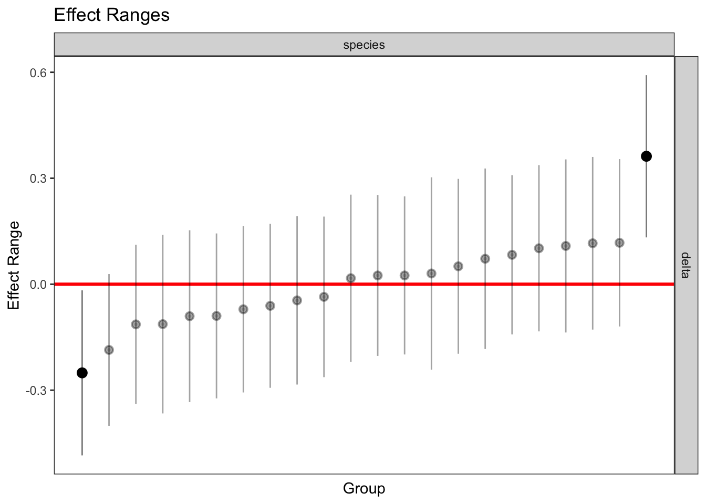
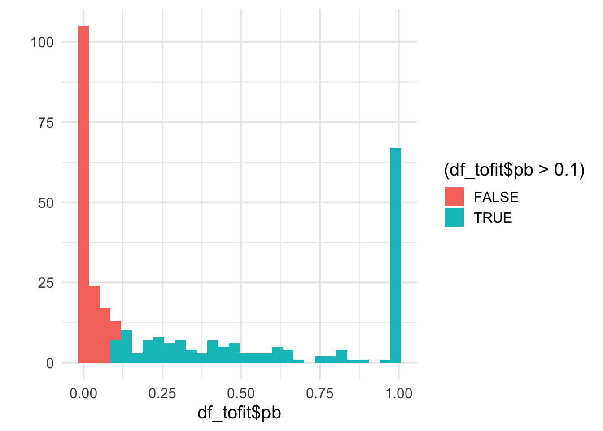
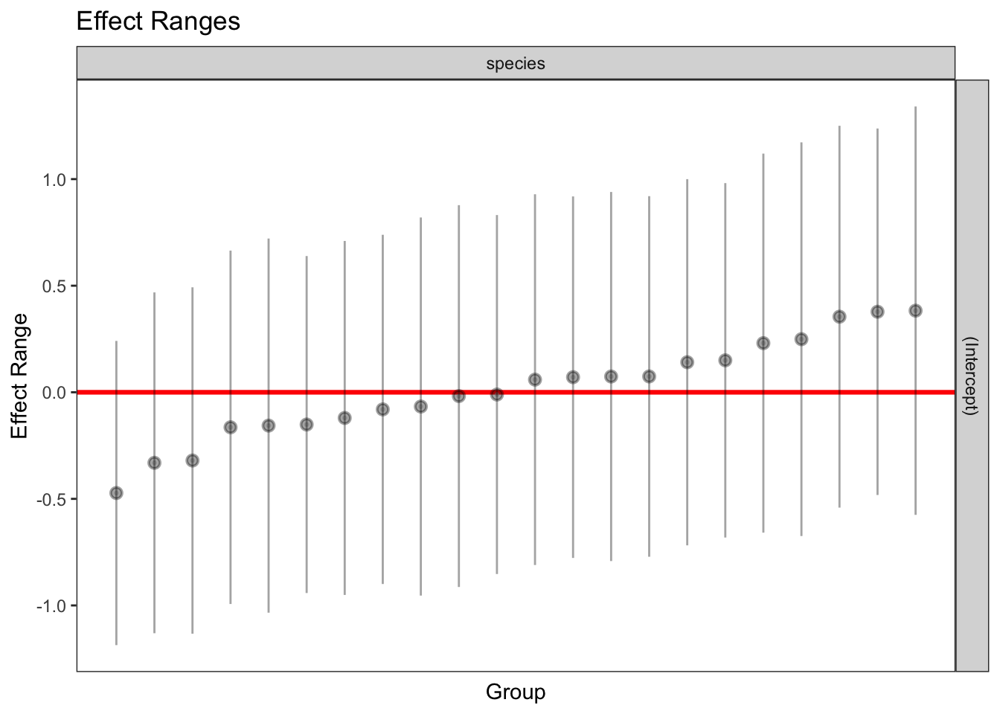
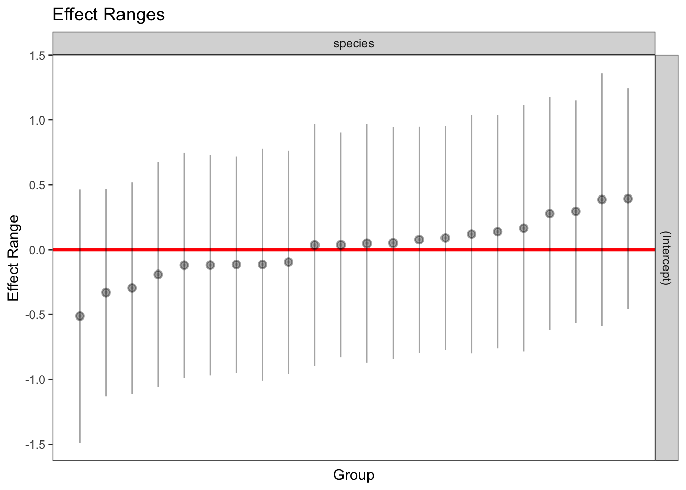
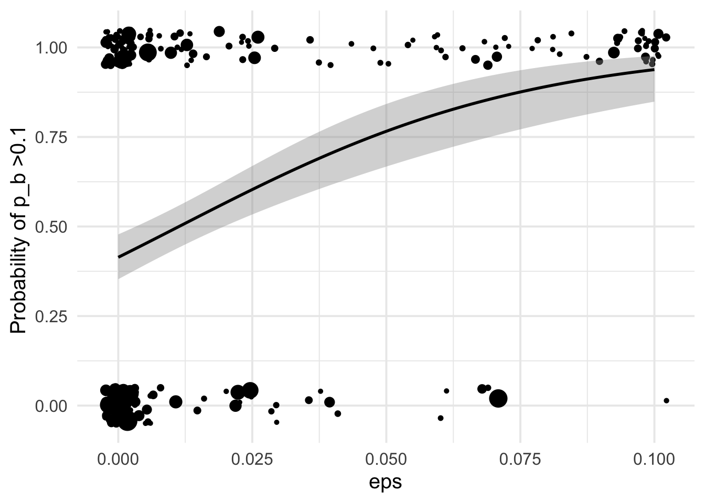
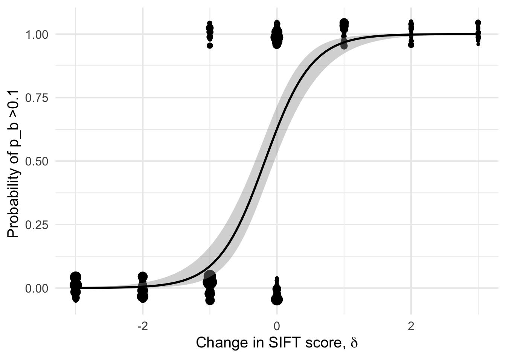

Supplementary text for GBE ms GBE-210319
J Chen, T. Bataillon, S Glemin, M. Lascoux
Last update: 2021-06-25
Last updated: 2021-06-25
Checks: 6 1
Knit directory: delta-sift-polydfe/
This reproducible R Markdown analysis was created with workflowr (version 1.6.2). The Checks tab describes the reproducibility checks that were applied when the results were created. The Past versions tab lists the development history.
The R Markdown file has unstaged changes. To know which version of the R Markdown file created these results, you’ll want to first commit it to the Git repo. If you’re still working on the analysis, you can ignore this warning. When you’re finished, you can run wflow_publish to commit the R Markdown file and build the HTML.
Great job! The global environment was empty. Objects defined in the global environment can affect the analysis in your R Markdown file in unknown ways. For reproduciblity it’s best to always run the code in an empty environment.
The command set.seed(20210313) was run prior to running the code in the R Markdown file. Setting a seed ensures that any results that rely on randomness, e.g. subsampling or permutations, are reproducible.
Great job! Recording the operating system, R version, and package versions is critical for reproducibility.
Nice! There were no cached chunks for this analysis, so you can be confident that you successfully produced the results during this run.
Great job! Using relative paths to the files within your workflowr project makes it easier to run your code on other machines.
Great! You are using Git for version control. Tracking code development and connecting the code version to the results is critical for reproducibility.
The results in this page were generated with repository version 593f3c8. See the Past versions tab to see a history of the changes made to the R Markdown and HTML files.
Note that you need to be careful to ensure that all relevant files for the analysis have been committed to Git prior to generating the results (you can use wflow_publish or wflow_git_commit). workflowr only checks the R Markdown file, but you know if there are other scripts or data files that it depends on. Below is the status of the Git repository when the results were generated:
Ignored files:
Ignored: .Rhistory
Ignored: .Rproj.user/
Ignored: analysis/.Rhistory
Untracked files:
Untracked: FigsMay2021/
Untracked: data/summary_table_v3.txt
Unstaged changes:
Deleted: analysis/S1_Stat_models_deltaDIFT_DFEs.Rmd
Modified: analysis/S1_Stat_models_deltaSIFT_DFEs.Rmd
Modified: analysis/S2_Summary_Figure_deltaSIFT_DFEs.Rmd
Modified: analysis/_site.yml
Note that any generated files, e.g. HTML, png, CSS, etc., are not included in this status report because it is ok for generated content to have uncommitted changes.
These are the previous versions of the repository in which changes were made to the R Markdown (analysis/S1_Stat_models_deltaSIFT_DFEs.Rmd) and HTML (docs/S1_Stat_models_deltaSIFT_DFEs.html) files. If you’ve configured a remote Git repository (see ?wflow_git_remote), click on the hyperlinks in the table below to view the files as they were in that past version.
| File | Version | Author | Date | Message |
|---|---|---|---|---|
| html | 593f3c8 | Thomas Bataillon | 2021-03-20 | Build site. |
| html | 52a94dd | Thomas Bataillon | 2021-03-20 | Build site. |
| Rmd | 3fe9d78 | Thomas Bataillon | 2021-03-20 | Publish the initial files + S1 & S2 + readme for myproject |
| html | 040ba4c | Thomas Bataillon | 2021-03-13 | Build site. |
| html | afad139 | Thomas Bataillon | 2021-03-13 | Build site. |
| html | 343029d | Thomas Bataillon | 2021-03-13 | Build site. |
| html | 706a03c | Thomas Bataillon | 2021-03-13 | Build site. |
| Rmd | 66965e5 | Thomas Bataillon | 2021-03-13 | Publish the initial files for myproject |
brief overview of analysis and updates :
We read in the data made available in the lastest version of the poyDFE outputs summary by Jun Chen.
We define a covariate \(\delta\) as the change in discretized SIFT scores
Rationale for conditioning DFE on \(\delta\) is to illustrate that change in SIFT scores are a powerful way to capture the expected effect of mutations and the fact that DFEs are quite different. There is a sharp divide between \(\delta \leq 0\) and \(\delta >0\)
we explore the amount of variation explained by \(\delta\) for
- pin/piS
- other DFE property: probability of sizable amount of beneficial mutations ( eg \(Prob[ p_b >0.1 ]\))
Reading the data
dfe_sift <- read.table("data/summary_table_v3.txt",header=T)
dim(dfe_sift)[1] 322 28names(dfe_sift) [1] "species" "group" "category" "fold" "from"
[6] "to" "delta" "PiS" "PiN" "PiNPiS"
[11] "syn_counts" "nsyn_counts" "Lsyn" "Lnsyn" "TD4"
[16] "TD0" "GC3" "gradient" "eps" "Sd"
[21] "beta" "pb" "Sb" "alpha" "D1"
[26] "D2" "D3" "D4" dfe_sift$delta <- dfe_sift$to - dfe_sift$from
head( dfe_sift) %>% kable(digits = 2)| species | group | category | fold | from | to | delta | PiS | PiN | PiNPiS | syn_counts | nsyn_counts | Lsyn | Lnsyn | TD4 | TD0 | GC3 | gradient | eps | Sd | beta | pb | Sb | alpha | D1 | D2 | D3 | D4 |
|---|---|---|---|---|---|---|---|---|---|---|---|---|---|---|---|---|---|---|---|---|---|---|---|---|---|---|---|
| Qa | tree | 0:DEL-DEL | 0 | -2 | -2 | 0 | 0.01 | 0.01 | 0.51 | 13643 | 1468 | 251324 | 54855 | -0.70 | -0.58 | 0.46 | 0 | 0.00 | -1117.94 | 0.65 | 0.38 | 2.74 | 0.99 | 0.01 | 0.02 | 0.11 | 0.48 |
| Qa | tree | 0:DEL-EXDEL | 0 | -2 | -3 | -1 | 0.01 | 0.00 | 0.18 | 12147 | 1331 | 217252 | 116333 | -0.72 | -1.18 | 0.46 | 0 | 0.00 | -3290.26 | 0.24 | 0.00 | 0.15 | 0.00 | 0.16 | 0.12 | 0.20 | 0.52 |
| Qa | tree | 0:DEL-STABLE | 0 | -2 | 0 | 2 | 0.01 | 0.05 | 4.31 | 33381 | 4811 | 649224 | 28635 | -0.69 | 0.44 | 0.46 | 0 | 0.00 | 0.00 | 0.01 | 0.99 | 50.00 | 1.00 | 0.01 | 0.00 | 0.00 | 0.00 |
| Qa | tree | 0:DEL-TOL | 0 | -2 | -1 | 1 | 0.01 | 0.02 | 1.47 | 16856 | 1878 | 308853 | 28779 | -0.67 | 0.13 | 0.46 | 0 | 0.02 | -4909.01 | 4.56 | 0.79 | 49.99 | 1.00 | 0.00 | 0.00 | 0.00 | 0.21 |
| Qa | tree | 0:EXDEL-DEL | 0 | -3 | -2 | 1 | 0.01 | 0.06 | 5.57 | 1075 | 131 | 25633 | 760 | -0.48 | 0.83 | 0.46 | 0 | 0.00 | -2309.41 | 4.74 | 0.99 | 49.97 | 1.00 | 0.00 | 0.00 | 0.00 | 0.01 |
| Qa | tree | 0:EXDEL-EXDEL | 0 | -3 | -3 | 0 | 0.02 | 0.00 | 0.09 | 333 | 31 | 4890 | 4596 | -0.50 | -0.65 | 0.47 | 0 | 0.03 | -4916.59 | 0.59 | 0.05 | 9.37 | 0.99 | 0.01 | 0.02 | 0.08 | 0.84 |
Filtering data :
Removing obs with too high \(\epsilon_{anc}\)
I n what follows I use the subset obtained with the condition filter(cat04==0) to generate df_tofit used throughout for fitting . NB Filtering on eps means 15% data obs removed but I think it is needed in order to avoid weird outliers
dim(dfe_sift)[1] 322 28species_low_nchr <- c("Qmango", "Shua", "Bnana")
dfe_sift <- dfe_sift %>%
filter(!(species %in% species_low_nchr)) %>%
filter(eps <0.1) #
dim(dfe_sift)[1] 322 28dim(dfe_sift)[1] 322 28table(dfe_sift$category)
0:DEL-DEL 0:DEL-EXDEL 0:DEL-STABLE 0:DEL-TOL 0:EXDEL-DEL
22 19 22 22 16
0:EXDEL-EXDEL 0:EXDEL-STABLE 0:EXDEL-TOL 0:STABLE-DEL 0:STABLE-EXDEL
12 22 16 22 22
0:STABLE-STABLE 0:STABLE-TOL 0:TOL-DEL 0:TOL-EXDEL 0:TOL-STABLE
18 22 22 21 22
0:TOL-TOL
22 # dfe_sift %>% filter(cat04==0) -> df_tofit
dfe_sift -> df_tofit
dim(df_tofit)[1] 322 28names(df_tofit) [1] "species" "group" "category" "fold" "from"
[6] "to" "delta" "PiS" "PiN" "PiNPiS"
[11] "syn_counts" "nsyn_counts" "Lsyn" "Lnsyn" "TD4"
[16] "TD0" "GC3" "gradient" "eps" "Sd"
[21] "beta" "pb" "Sb" "alpha" "D1"
[26] "D2" "D3" "D4" length(unique(df_tofit$species))[1] 22Dependent variable : \(\frac{P_0}{P_4}\)
We use the corrected \(\frac{P_0}{P_4}\) analogous to \(\frac{\pi_N}{\pi_S}\)
We correct by adding +1 to every count: \(\pi_N =\frac{n_N + 1}{L_N + 1}\) and \(\pi_S =\frac{n_S + 1}{L_S + 1}\) we can then directly use a log scale
df_tofit$PiNPiScor <- (df_tofit$nsyn_counts+1)*(df_tofit$Lsyn+1)/((df_tofit$Lnsyn+1)*(df_tofit$syn_counts+1))
df_tofit %>%
# filter(cat04==0) %>%
ggplot(aes(x=delta, y=PiNPiScor, weight=(1+nsyn_counts)) )+
# geom_point(aes(size = nsyn_counts)) +
geom_jitter(width = 0.2, aes(size = nsyn_counts)) +
scale_y_log10() +
# facet_wrap(~ group) +
geom_smooth(method = "loess", formula ="y~ x", se =T, aes(color=NULL))+
geom_smooth(method = "lm", formula ="y~ x", se =T, aes(color=NULL), color="orange")+
theme_minimal(base_size = 20)+
xlab(expression(paste("Change in SIFT score, " , delta)))+
ylab("corrected P0/P4")+
scale_color_colorblind()+
theme(legend.position = "none")+
NULL
| Version | Author | Date |
|---|---|---|
| 706a03c | Thomas Bataillon | 2021-03-13 |
# ggsave("manuscript_GBE/manuscript_GBE_Jun2/figures_update_Feb2020/corrected_p0p4_delta.pdf", device = "pdf")A (linear) fit for each species separately
df_tofit %>%
# filter(cat04==0) %>%
ggplot(aes(x=delta, y=PiNPiScor, weight=sqrt((1+nsyn_counts))) )+
# geom_point(aes(size = nsyn_counts)) +
geom_jitter(width = 0.2, aes(size = nsyn_counts)) +
scale_y_log10() +
# facet_wrap(~ group) +
geom_smooth(method = "lm", formula ="y~ x", se =F)+
theme_minimal(base_size = 20)+
xlab(expression(paste("Change in SIFT score, " , delta)))+
ylab("corrected P0/P4")+
scale_color_viridis_d(direction = -1)+
theme(legend.position = "none")+
NULL# ggsave("manuscript_GBE/manuscript_GBE_Jun2/figures_update_Feb2020/corrected_p0p4_delta_manyslopes.pdf",device = "pdf")
| Version | Author | Date |
|---|---|---|
| 706a03c | Thomas Bataillon | 2021-03-13 |
Linear (mixed) models
dim(df_tofit)[1] 322 29df_tofit$weights <- sqrt(df_tofit$nsyn_counts)
qplot(log10(df_tofit$PiNPiScor), bins = 25)
| Version | Author | Date |
|---|---|---|
| 706a03c | Thomas Bataillon | 2021-03-13 |
# ggplot(df_tofit,
# aes(x=delta, y = log10(PiNPiScor),
# size = )) +
# geom_jitter(width = 0.1)+
# geom_smooth(method="lm", se =T)+ NULL
#
naive0 <- lm(log(PiNPiScor) ~ 1 ,
data = df_tofit)
naive <- lm(log(PiNPiScor) ~ delta ,
data = df_tofit)
summary(naive)
Call:
lm(formula = log(PiNPiScor) ~ delta, data = df_tofit)
Residuals:
Min 1Q Median 3Q Max
-3.0001 -0.6308 -0.0714 0.5888 4.1915
Coefficients:
Estimate Std. Error t value Pr(>|t|)
(Intercept) -0.65193 0.05637 -11.56 <2e-16 ***
delta 1.00326 0.03484 28.80 <2e-16 ***
---
Signif. codes: 0 '***' 0.001 '**' 0.01 '*' 0.05 '.' 0.1 ' ' 1
Residual standard error: 1.011 on 320 degrees of freedom
Multiple R-squared: 0.7216, Adjusted R-squared: 0.7207
F-statistic: 829.3 on 1 and 320 DF, p-value: < 2.2e-16# plot(naive)
AIC(naive)[1] 924.9761mixed_1 <-lmer(formula = log(PiNPiScor) ~ delta +(1|species) + GC3,
data = df_tofit, REML =F )
merTools::modelInfo(mixed_1) n.obs n.lvls AIC sigma
1 322 1 917.0645 0.9594275lmerTest::ranova(mixed_1) ANOVA-like table for random-effects: Single term deletions
Model:
log(PiNPiScor) ~ delta + GC3 + (1 | species)
npar logLik AIC LRT Df Pr(>Chisq)
<none> 5 -453.53 917.06
(1 | species) 4 -458.99 925.98 10.916 1 0.0009534 ***
---
Signif. codes: 0 '***' 0.001 '**' 0.01 '*' 0.05 '.' 0.1 ' ' 1mixed_2 <-lmer(formula = log(PiNPiScor) ~ delta +(0 + delta |species) + GC3,
data = df_tofit, REML =F )
AIC(mixed_2)[1] 921.301merTools::modelInfo(mixed_2) n.obs n.lvls AIC sigma
1 322 1 921.301 0.9702108plotREsim(REsim(mixed_1)) # estimated random effects (intercepts) for each sp
| Version | Author | Date |
|---|---|---|
| 706a03c | Thomas Bataillon | 2021-03-13 |
summary(mixed_2)Linear mixed model fit by maximum likelihood . t-tests use Satterthwaite's
method [lmerModLmerTest]
Formula: log(PiNPiScor) ~ delta + (0 + delta | species) + GC3
Data: df_tofit
AIC BIC logLik deviance df.resid
921.3 940.2 -455.7 911.3 317
Scaled residuals:
Min 1Q Median 3Q Max
-2.8074 -0.6370 -0.0664 0.5968 3.2289
Random effects:
Groups Name Variance Std.Dev.
species delta 0.02863 0.1692
Residual 0.94131 0.9702
Number of obs: 322, groups: species, 22
Fixed effects:
Estimate Std. Error df t value Pr(>|t|)
(Intercept) -1.22692 0.57135 301.09865 -2.147 0.0326 *
delta 1.01025 0.04923 20.21591 20.522 5.22e-15 ***
GC3 1.21302 1.19566 301.04356 1.015 0.3111
---
Signif. codes: 0 '***' 0.001 '**' 0.01 '*' 0.05 '.' 0.1 ' ' 1
Correlation of Fixed Effects:
(Intr) delta
delta -0.016
GC3 -0.996 0.018plotREsim(REsim(mixed_2)) # estimated random effects (slopes) for each sp relative to the common slope
| Version | Author | Date |
|---|---|---|
| 706a03c | Thomas Bataillon | 2021-03-13 |
Summary of fits
vec_aic = c(AIC(naive0), AIC(naive), AIC(mixed_1), AIC(mixed_2))
models_names = c("lm no slope", "lm slope", "random intercept", "random slope")
df_table <- tibble(models_names, vec_aic)
knitr::kable(df_table, digits = 2, col.names = c("Models for P0/P4 ratio", "AIC"))| Models for P0/P4 ratio | AIC |
|---|---|
| lm no slope | 1334.67 |
| lm slope | 924.98 |
| random intercept | 917.06 |
| random slope | 921.30 |
1 - (deviance(mixed_2) /(1334.67))[1] 0.3172088Tech check: influence of eps
naive0 <- lm(log(PiNPiScor) ~ eps ,
data = df_tofit)
summary(naive0)
Call:
lm(formula = log(PiNPiScor) ~ eps, data = df_tofit)
Residuals:
Min 1Q Median 3Q Max
-4.7010 -1.1764 -0.3760 0.5029 7.4718
Coefficients:
Estimate Std. Error t value Pr(>|t|)
(Intercept) -0.9601 0.1200 -8.004 2.25e-14 ***
eps 14.3176 3.2290 4.434 1.27e-05 ***
---
Signif. codes: 0 '***' 0.001 '**' 0.01 '*' 0.05 '.' 0.1 ' ' 1
Residual standard error: 1.86 on 320 degrees of freedom
Multiple R-squared: 0.05788, Adjusted R-squared: 0.05494
F-statistic: 19.66 on 1 and 320 DF, p-value: 1.273e-05naive <- lm(log(PiNPiScor) ~ eps + delta + GC3,
data = df_tofit)
summary(naive)
Call:
lm(formula = log(PiNPiScor) ~ eps + delta + GC3, data = df_tofit)
Residuals:
Min 1Q Median 3Q Max
-2.9375 -0.6546 -0.0559 0.5646 4.0778
Coefficients:
Estimate Std. Error t value Pr(>|t|)
(Intercept) -1.17284 0.59173 -1.982 0.0483 *
eps -3.86523 1.86450 -2.073 0.0390 *
delta 1.03108 0.03702 27.854 <2e-16 ***
GC3 1.24931 1.23655 1.010 0.3131
---
Signif. codes: 0 '***' 0.001 '**' 0.01 '*' 0.05 '.' 0.1 ' ' 1
Residual standard error: 1.006 on 318 degrees of freedom
Multiple R-squared: 0.7261, Adjusted R-squared: 0.7235
F-statistic: 281 on 3 and 318 DF, p-value: < 2.2e-16anova(naive, test = "F")Analysis of Variance Table
Response: log(PiNPiScor)
Df Sum Sq Mean Sq F value Pr(>F)
eps 1 68.02 68.02 67.2088 6.075e-15 ***
delta 1 784.29 784.29 774.8765 < 2.2e-16 ***
GC3 1 1.03 1.03 1.0207 0.3131
Residuals 318 321.86 1.01
---
Signif. codes: 0 '***' 0.001 '**' 0.01 '*' 0.05 '.' 0.1 ' ' 1car::vif(naive)Registered S3 methods overwritten by 'car':
method from
influence.merMod lme4
cooks.distance.influence.merMod lme4
dfbeta.influence.merMod lme4
dfbetas.influence.merMod lme4 eps delta GC3
1.139763 1.140597 1.000781 # plot(naive)
AIC(naive)[1] 923.6579mixed_1 <-lmer(formula = log(PiNPiScor) ~ eps + delta +(1|species) + GC3,
data = df_tofit, REML =F )
merTools::modelInfo(mixed_1) n.obs n.lvls AIC sigma
1 322 1 914.672 0.9530258lmerTest::ranova(mixed_1) ANOVA-like table for random-effects: Single term deletions
Model:
log(PiNPiScor) ~ eps + delta + GC3 + (1 | species)
npar logLik AIC LRT Df Pr(>Chisq)
<none> 6 -451.34 914.67
(1 | species) 5 -456.83 923.66 10.986 1 0.0009181 ***
---
Signif. codes: 0 '***' 0.001 '**' 0.01 '*' 0.05 '.' 0.1 ' ' 1mixed_2 <-lmer(formula = log(PiNPiScor) ~ eps + delta +(0 + delta |species) +GC3,
data = df_tofit, REML =F )
AIC(mixed_2)[1] 916.6742merTools::modelInfo(mixed_2) n.obs n.lvls AIC sigma
1 322 1 916.6742 0.9566721plotREsim(REsim(mixed_1)) # estimated random effects (intercepts) for each sp
| Version | Author | Date |
|---|---|---|
| 706a03c | Thomas Bataillon | 2021-03-13 |
summary(mixed_2)Linear mixed model fit by maximum likelihood . t-tests use Satterthwaite's
method [lmerModLmerTest]
Formula: log(PiNPiScor) ~ eps + delta + (0 + delta | species) + GC3
Data: df_tofit
AIC BIC logLik deviance df.resid
916.7 939.3 -452.3 904.7 316
Scaled residuals:
Min 1Q Median 3Q Max
-2.7872 -0.6122 -0.0811 0.5955 3.3003
Random effects:
Groups Name Variance Std.Dev.
species delta 0.03387 0.1840
Residual 0.91522 0.9567
Number of obs: 322, groups: species, 22
Fixed effects:
Estimate Std. Error df t value Pr(>|t|)
(Intercept) -1.12812 0.56476 301.63540 -1.998 0.0467 *
eps -4.82117 1.84767 321.68074 -2.609 0.0095 **
delta 1.04440 0.05288 22.81322 19.751 7.65e-16 ***
GC3 1.19834 1.17927 300.91162 1.016 0.3104
---
Signif. codes: 0 '***' 0.001 '**' 0.01 '*' 0.05 '.' 0.1 ' ' 1
Correlation of Fixed Effects:
(Intr) eps delta
eps -0.066
delta 0.001 -0.243
GC3 -0.994 0.004 0.015plotREsim(REsim(mixed_2)) # estimated random effects (slopes) for each sp relative to the common slope
| Version | Author | Date |
|---|---|---|
| 706a03c | Thomas Bataillon | 2021-03-13 |
vec_aic = c(AIC(naive0), AIC(naive), AIC(mixed_1), AIC(mixed_2))
models_names = c("lm no slope", "lm slope", "random intercept", "random slope")
df_table <- tibble(models_names, vec_aic)
knitr::kable(df_table, digits = 2, col.names = c("Models for P0/P4 ratio", "AIC"))| Models for P0/P4 ratio | AIC |
|---|---|
| lm no slope | 1317.47 |
| lm slope | 923.66 |
| random intercept | 914.67 |
| random slope | 916.67 |
Dependent variable : \(p_b\)
Here if we want to analyse variation in \(p_b\), we probably need to discretize the data and go a logistic regression on the two categories
Overview
qplot(df_tofit$pb, bins = 30, fill = (df_tofit$pb>0.1)) +
theme_minimal(base_size = 15) 
| Version | Author | Date |
|---|---|---|
| 706a03c | Thomas Bataillon | 2021-03-13 |
df_tofit <- mutate(df_tofit, benef_mut = ifelse(pb<0.1, 0, 1))
table(df_tofit$benef_mut) %>% kable(col.names = c("benef_mut", "n"))| benef_mut | n |
|---|---|
| 0 | 152 |
| 1 | 170 |
df_tofit %>%
ggplot(aes(x=delta, y=benef_mut, weight=sqrt((1+nsyn_counts))) )+
# geom_point(aes(size = nsyn_counts)) +
geom_jitter( width = 0.15, height = 0.05, aes(size = nsyn_counts)) +
geom_smooth(method = "glm",
method.args=list(family="binomial"), se=T, aes(color="black"), size = 2) +
theme_minimal(base_size = 20)+
xlab(expression(paste("Change in SIFT score, " , delta)))+
ylab(expression(paste("Probability of " , p[b], " > 0.1")))+
scale_color_viridis_d()+
theme(legend.position = "none")+
NULL`geom_smooth()` using formula 'y ~ x'Warning in eval(family$initialize): non-integer #successes in a binomial glm!
| Version | Author | Date |
|---|---|---|
| 706a03c | Thomas Bataillon | 2021-03-13 |
A loess fit for each species separately
Linear (mixed) models
# df_tofit<- df_tofit[-c(247),] # 1 mega outlier
dim(df_tofit)[1] 322 31df_tofit$weights <- sqrt(df_tofit$nsyn_counts)
naive0 <- glm(benef_mut ~ 1 , family = "binomial",
data = df_tofit)
summary(naive0)
Call:
glm(formula = benef_mut ~ 1, family = "binomial", data = df_tofit)
Deviance Residuals:
Min 1Q Median 3Q Max
-1.225 -1.225 1.130 1.130 1.130
Coefficients:
Estimate Std. Error z value Pr(>|z|)
(Intercept) 0.1119 0.1116 1.003 0.316
(Dispersion parameter for binomial family taken to be 1)
Null deviance: 445.38 on 321 degrees of freedom
Residual deviance: 445.38 on 321 degrees of freedom
AIC: 447.38
Number of Fisher Scoring iterations: 3naive0$deviance[1] 445.38naive <- glm(benef_mut ~ delta + GC3 , family = "binomial",
data = df_tofit)
summary(naive)
Call:
glm(formula = benef_mut ~ delta + GC3, family = "binomial", data = df_tofit)
Deviance Residuals:
Min 1Q Median 3Q Max
-1.60990 -0.37654 0.01403 0.24966 2.33819
Coefficients:
Estimate Std. Error z value Pr(>|z|)
(Intercept) 2.7715 2.0184 1.373 0.17
delta 2.8966 0.3647 7.943 1.98e-15 ***
GC3 -4.7360 4.2077 -1.126 0.26
---
Signif. codes: 0 '***' 0.001 '**' 0.01 '*' 0.05 '.' 0.1 ' ' 1
(Dispersion parameter for binomial family taken to be 1)
Null deviance: 445.38 on 321 degrees of freedom
Residual deviance: 154.73 on 319 degrees of freedom
AIC: 160.73
Number of Fisher Scoring iterations: 7anova(naive0, naive, test="Chisq")Analysis of Deviance Table
Model 1: benef_mut ~ 1
Model 2: benef_mut ~ delta + GC3
Resid. Df Resid. Dev Df Deviance Pr(>Chi)
1 321 445.38
2 319 154.73 2 290.65 < 2.2e-16 ***
---
Signif. codes: 0 '***' 0.001 '**' 0.01 '*' 0.05 '.' 0.1 ' ' 1plot(naive)
| Version | Author | Date |
|---|---|---|
| 706a03c | Thomas Bataillon | 2021-03-13 |

| Version | Author | Date |
|---|---|---|
| 706a03c | Thomas Bataillon | 2021-03-13 |
| Version | Author | Date |
|---|---|---|
| 706a03c | Thomas Bataillon | 2021-03-13 |
| Version | Author | Date |
|---|---|---|
| 706a03c | Thomas Bataillon | 2021-03-13 |
1 - (naive$deviance/naive0$deviance) # pseudo R^2 [1] 0.6525807AIC(naive)[1] 160.7336mixed_1 <-glmer(benef_mut ~ delta +(1|species) , family = "binomial",
data = df_tofit )
AIC(mixed_1)[1] 161.5645summary(mixed_1)Generalized linear mixed model fit by maximum likelihood (Laplace
Approximation) [glmerMod]
Family: binomial ( logit )
Formula: benef_mut ~ delta + (1 | species)
Data: df_tofit
AIC BIC logLik deviance df.resid
161.6 172.9 -77.8 155.6 319
Scaled residuals:
Min 1Q Median 3Q Max
-1.5858 -0.2553 0.0084 0.1698 3.1883
Random effects:
Groups Name Variance Std.Dev.
species (Intercept) 0.2315 0.4811
Number of obs: 322, groups: species, 22
Fixed effects:
Estimate Std. Error z value Pr(>|z|)
(Intercept) 0.5604 0.2471 2.268 0.0233 *
delta 2.9841 0.4084 7.307 2.73e-13 ***
---
Signif. codes: 0 '***' 0.001 '**' 0.01 '*' 0.05 '.' 0.1 ' ' 1
Correlation of Fixed Effects:
(Intr)
delta 0.321 merTools::modelInfo(mixed_1) n.obs n.lvls AIC sigma
1 322 1 161.5645 1mixed_2 <-glmer(formula = benef_mut ~ delta +(0 + delta |species), family = "binomial",
data = df_tofit)
AIC(mixed_2)[1] 161.3266summary(mixed_2)Generalized linear mixed model fit by maximum likelihood (Laplace
Approximation) [glmerMod]
Family: binomial ( logit )
Formula: benef_mut ~ delta + (0 + delta | species)
Data: df_tofit
AIC BIC logLik deviance df.resid
161.3 172.7 -77.7 155.3 319
Scaled residuals:
Min 1Q Median 3Q Max
-1.29986 -0.23234 0.00439 0.13751 3.10008
Random effects:
Groups Name Variance Std.Dev.
species delta 0.826 0.9088
Number of obs: 322, groups: species, 22
Fixed effects:
Estimate Std. Error z value Pr(>|z|)
(Intercept) 0.5245 0.2100 2.498 0.0125 *
delta 3.2629 0.6507 5.015 5.32e-07 ***
---
Signif. codes: 0 '***' 0.001 '**' 0.01 '*' 0.05 '.' 0.1 ' ' 1
Correlation of Fixed Effects:
(Intr)
delta 0.162 merTools::modelInfo(mixed_2) n.obs n.lvls AIC sigma
1 322 1 161.3266 1plotREsim(REsim(mixed_1)) # estimated random effects (intercepts) for each sp
| Version | Author | Date |
|---|---|---|
| 706a03c | Thomas Bataillon | 2021-03-13 |
plotREsim(REsim(mixed_2)) # estimated random effects (slopes) for each sp relative to the common slope
| Version | Author | Date |
|---|---|---|
| 706a03c | Thomas Bataillon | 2021-03-13 |
Summary of fits
vec_aic = c(AIC(naive0), AIC(naive), AIC(mixed_1), AIC(mixed_2))
models_names = c("glm no slope", "glm with slope", "glm with random intercept", "glm with random slope")
df_table <- tibble(models_names, vec_aic)
knitr::kable(df_table, digits = 2, col.names = c("Models for proportion beneficial ", "AIC"))| Models for proportion beneficial | AIC |
|---|---|
| glm no slope | 447.38 |
| glm with slope | 160.73 |
| glm with random intercept | 161.56 |
| glm with random slope | 161.33 |
Some pseudo R^2 to compare with the linear models on the piNpiS ratio Using the deviance of mixed_2 and comparing it to the most naive model (glm no slope) aka naive0 yields a pseudo R^2:
1 -(deviance(mixed_2)/naive0$deviance)[1] 0.6723806tech check with eps included in the model
naive00 <- glm(benef_mut ~ 1 , family = "binomial",
data = df_tofit)
naive0 <- glm(benef_mut ~ eps , family = "binomial",
data = df_tofit)
# updated pseudo R2
1 -(deviance(naive0)/naive00$deviance)[1] 0.1099998summary(naive0)
Call:
glm(formula = benef_mut ~ eps, family = "binomial", data = df_tofit)
Deviance Residuals:
Min 1Q Median 3Q Max
-2.3566 -1.0345 0.3584 1.2800 1.3280
Coefficients:
Estimate Std. Error z value Pr(>|z|)
(Intercept) -0.3473 0.1322 -2.628 0.00859 **
eps 30.6481 5.4826 5.590 2.27e-08 ***
---
Signif. codes: 0 '***' 0.001 '**' 0.01 '*' 0.05 '.' 0.1 ' ' 1
(Dispersion parameter for binomial family taken to be 1)
Null deviance: 445.38 on 321 degrees of freedom
Residual deviance: 396.39 on 320 degrees of freedom
AIC: 400.39
Number of Fisher Scoring iterations: 4naive0$deviance[1] 396.3883naive <- glm(benef_mut ~ eps + delta + GC3, family = "binomial",
data = df_tofit)
summary(naive)
Call:
glm(formula = benef_mut ~ eps + delta + GC3, family = "binomial",
data = df_tofit)
Deviance Residuals:
Min 1Q Median 3Q Max
-1.58904 -0.36495 0.01508 0.24802 2.36236
Coefficients:
Estimate Std. Error z value Pr(>|z|)
(Intercept) 2.4569 2.0422 1.203 0.229
eps 9.1879 7.2332 1.270 0.204
delta 2.7935 0.3677 7.597 3.02e-14 ***
GC3 -4.4566 4.2389 -1.051 0.293
---
Signif. codes: 0 '***' 0.001 '**' 0.01 '*' 0.05 '.' 0.1 ' ' 1
(Dispersion parameter for binomial family taken to be 1)
Null deviance: 445.38 on 321 degrees of freedom
Residual deviance: 153.02 on 318 degrees of freedom
AIC: 161.02
Number of Fisher Scoring iterations: 7anova(naive0, naive, test="Chisq")Analysis of Deviance Table
Model 1: benef_mut ~ eps
Model 2: benef_mut ~ eps + delta + GC3
Resid. Df Resid. Dev Df Deviance Pr(>Chi)
1 320 396.39
2 318 153.02 2 243.36 < 2.2e-16 ***
---
Signif. codes: 0 '***' 0.001 '**' 0.01 '*' 0.05 '.' 0.1 ' ' 1anova(naive, test="Chisq")Analysis of Deviance Table
Model: binomial, link: logit
Response: benef_mut
Terms added sequentially (first to last)
Df Deviance Resid. Df Resid. Dev Pr(>Chi)
NULL 321 445.38
eps 1 48.992 320 396.39 2.57e-12 ***
delta 1 242.246 319 154.14 < 2.2e-16 ***
GC3 1 1.118 318 153.02 0.2903
---
Signif. codes: 0 '***' 0.001 '**' 0.01 '*' 0.05 '.' 0.1 ' ' 11 - (naive$deviance/naive0$deviance) # pseudo R^2 [1] 0.6139544AIC(naive)[1] 161.024mixed_1 <-glmer(benef_mut ~ eps + delta +(1|species) , family = "binomial",
data = df_tofit )
AIC(mixed_1)[1] 161.6371summary(mixed_1)Generalized linear mixed model fit by maximum likelihood (Laplace
Approximation) [glmerMod]
Family: binomial ( logit )
Formula: benef_mut ~ eps + delta + (1 | species)
Data: df_tofit
AIC BIC logLik deviance df.resid
161.6 176.7 -76.8 153.6 318
Scaled residuals:
Min 1Q Median 3Q Max
-1.9716 -0.2447 0.0097 0.1679 3.2852
Random effects:
Groups Name Variance Std.Dev.
species (Intercept) 0.2584 0.5083
Number of obs: 322, groups: species, 22
Fixed effects:
Estimate Std. Error z value Pr(>|z|)
(Intercept) 0.3652 0.2818 1.296 0.195
eps 10.1930 7.6034 1.341 0.180
delta 2.8818 0.4095 7.037 1.96e-12 ***
---
Signif. codes: 0 '***' 0.001 '**' 0.01 '*' 0.05 '.' 0.1 ' ' 1
Correlation of Fixed Effects:
(Intr) eps
eps -0.451
delta 0.324 -0.097merTools::modelInfo(mixed_1) n.obs n.lvls AIC sigma
1 322 1 161.6371 1mixed_2 <-glmer(formula = benef_mut ~ eps + delta +(0 + delta |species), family = "binomial",
data = df_tofit)
AIC(mixed_2)[1] 161.3523summary(mixed_2)Generalized linear mixed model fit by maximum likelihood (Laplace
Approximation) [glmerMod]
Family: binomial ( logit )
Formula: benef_mut ~ eps + delta + (0 + delta | species)
Data: df_tofit
AIC BIC logLik deviance df.resid
161.4 176.5 -76.7 153.4 318
Scaled residuals:
Min 1Q Median 3Q Max
-1.9577 -0.2194 0.0055 0.1521 3.2427
Random effects:
Groups Name Variance Std.Dev.
species delta 0.8684 0.9319
Number of obs: 322, groups: species, 22
Fixed effects:
Estimate Std. Error z value Pr(>|z|)
(Intercept) 0.3293 0.2483 1.326 0.185
eps 10.1583 7.5161 1.352 0.177
delta 3.1732 0.6475 4.901 9.53e-07 ***
---
Signif. codes: 0 '***' 0.001 '**' 0.01 '*' 0.05 '.' 0.1 ' ' 1
Correlation of Fixed Effects:
(Intr) eps
eps -0.521
delta 0.164 -0.051merTools::modelInfo(mixed_2) n.obs n.lvls AIC sigma
1 322 1 161.3523 1plotREsim(REsim(mixed_1)) # estimated random effects (intercepts) for each sp
| Version | Author | Date |
|---|---|---|
| 706a03c | Thomas Bataillon | 2021-03-13 |
plotREsim(REsim(mixed_2)) # estimated random effects (slopes) for each sp relative to the common slope
| Version | Author | Date |
|---|---|---|
| 706a03c | Thomas Bataillon | 2021-03-13 |
car::vif(naive) eps delta GC3
1.028107 1.034791 1.010204 df_tofit %>%
ggplot(aes(x=eps, y=benef_mut))+
# geom_point(aes(size = nsyn_counts)) +
geom_jitter( width = 0.0025, height = 0.05, aes(size = nsyn_counts)) +
geom_smooth(method = "glm",
method.args=list(family="binomial"), se=T, aes(color=NULL), color="black") +
theme_minimal(base_size = 15)+
xlab("eps")+
ylab("Probability of p_b >0.1 ")+
scale_color_viridis_d()+
theme(legend.position = "none")+
NULL`geom_smooth()` using formula 'y ~ x'
| Version | Author | Date |
|---|---|---|
| 706a03c | Thomas Bataillon | 2021-03-13 |
car::vif(naive) eps delta GC3
1.028107 1.034791 1.010204 df_tofit %>%
ggplot(aes(x=delta, y=benef_mut))+
# geom_point(aes(size = nsyn_counts)) +
geom_jitter( width = 0.0025, height = 0.05, aes(size = nsyn_counts)) +
geom_smooth(method = "glm",
method.args=list(family="binomial"), se=T, aes(color=NULL), color="black") +
theme_minimal(base_size = 15)+
xlab(expression(paste("Change in SIFT score, " , delta)))+
ylab("Probability of p_b >0.1 ")+
scale_color_viridis_d()+
theme(legend.position = "none")+
NULL`geom_smooth()` using formula 'y ~ x'
| Version | Author | Date |
|---|---|---|
| 706a03c | Thomas Bataillon | 2021-03-13 |
# updated pseudo R2
1 -(deviance(mixed_2)/naive0$deviance)[1] 0.6379991
sessionInfo()R version 4.0.2 (2020-06-22)
Platform: x86_64-apple-darwin17.0 (64-bit)
Running under: macOS Catalina 10.15.7
Matrix products: default
BLAS: /Library/Frameworks/R.framework/Versions/4.0/Resources/lib/libRblas.dylib
LAPACK: /Library/Frameworks/R.framework/Versions/4.0/Resources/lib/libRlapack.dylib
locale:
[1] en_US.UTF-8/en_US.UTF-8/en_US.UTF-8/C/en_US.UTF-8/en_US.UTF-8
attached base packages:
[1] stats graphics grDevices utils datasets methods base
other attached packages:
[1] lmerTest_3.1-3 merTools_0.5.2 arm_1.11-2 MASS_7.3-51.6 lme4_1.1-26
[6] Matrix_1.2-18 knitr_1.29 magrittr_1.5 dplyr_1.0.2 ggthemes_4.2.0
[11] ggplot2_3.3.2
loaded via a namespace (and not attached):
[1] nlme_3.1-148 fs_1.5.0 RColorBrewer_1.1-2
[4] rprojroot_2.0.2 numDeriv_2016.8-1.1 tools_4.0.2
[7] TMB_1.7.20 backports_1.1.9 R6_2.4.1
[10] rpart_4.1-15 Hmisc_4.5-0 mgcv_1.8-31
[13] colorspace_1.4-1 nnet_7.3-14 withr_2.2.0
[16] tidyselect_1.1.0 gridExtra_2.3 curl_4.3
[19] compiler_4.0.2 git2r_0.27.1 htmlTable_2.1.0
[22] labeling_0.3 scales_1.1.1 checkmate_2.0.0
[25] mvtnorm_1.1-1 blme_1.0-5 stringr_1.4.0
[28] digest_0.6.25 foreign_0.8-80 minqa_1.2.4
[31] rmarkdown_2.3 rio_0.5.26 base64enc_0.1-3
[34] jpeg_0.1-8.1 pkgconfig_2.0.3 htmltools_0.5.0
[37] fastmap_1.0.1 highr_0.8 readxl_1.3.1
[40] htmlwidgets_1.5.1 rlang_0.4.7 rstudioapi_0.11
[43] shiny_1.5.0 generics_0.0.2 farver_2.0.3
[46] broom.mixed_0.2.6 zip_2.1.1 car_3.0-10
[49] Formula_1.2-4 Rcpp_1.0.5 munsell_0.5.0
[52] abind_1.4-5 lifecycle_0.2.0 stringi_1.4.6
[55] whisker_0.4 yaml_2.2.1 carData_3.0-4
[58] plyr_1.8.6 grid_4.0.2 promises_1.1.1
[61] forcats_0.5.0 crayon_1.3.4 lattice_0.20-41
[64] haven_2.3.1 splines_4.0.2 hms_0.5.3
[67] pillar_1.4.6 boot_1.3-25 reshape2_1.4.4
[70] codetools_0.2-16 glue_1.4.1 evaluate_0.14
[73] latticeExtra_0.6-29 data.table_1.13.0 png_0.1-7
[76] vctrs_0.3.2 nloptr_1.2.2.2 httpuv_1.5.4
[79] foreach_1.5.1 cellranger_1.1.0 gtable_0.3.0
[82] purrr_0.3.4 tidyr_1.1.1 openxlsx_4.2.3
[85] xfun_0.16 mime_0.9 xtable_1.8-4
[88] broom_0.7.0 coda_0.19-4 later_1.1.0.1
[91] viridisLite_0.4.0 survival_3.1-12 tibble_3.0.3
[94] iterators_1.0.13 workflowr_1.6.2 cluster_2.1.0
[97] statmod_1.4.35 ellipsis_0.3.1